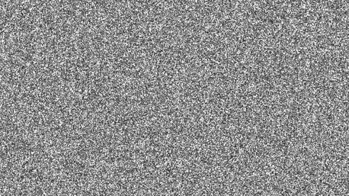

Commands
M-z - zap-to-char
C-M-k - kill-balanced-expression
C-M-SPACE - mark-sexp
M-m - back-to-indentation
C-x r k - kill-rectangle
C-x r t - string-rectangle
M-c - comment-region
C-x M-c - uncomment-region
M-( - insert-parentheses
C-q - expand-region
C-, - point-to-register
M-, - jump-to-register
M-l - downcase-word, M-u - upcase-word
C-x C-l - downcase-region, C-x C-u - upcase-region
C-x C-t - transpose-lines
C-x (,) - kmacro-{start-end}-macro
C-x e - kmacro-end-and-call-macro
M-q - fill-paragraph
M-- M-d - negative kill-word
C-< - mark-previous-like-this
M-e/M-a - {next,previous}-blank-line
Packages
smooth-scrolling
beacon-mode
linum-relative
nyan-mode
popwin
avy-goto-char
electric-pair-mode
Themes
cyberpunk
gruber-darker
zap-to-char
kill-balanced-expression
mark-sexp
back-to-indentation
kill-rectangle
string-rectangle
comment-region
uncomment-region
insert-parentheses
expand-region
point-to-register
jump-to-register
downcase-word, upcase-word
downcase-region, upcase-region
transpose-lines
kmacro-{start,end}-macro
kmacro-end-and-call-macro
fill-paragraph
negative kill-word
mark-previous-like-this
{next,previous}-blank-line
smooth-scrolling
beacon-mode
linum-relative
nyan-mode
popwin
avy-goto-char
electric-pair-mode

Kill up to and including ARGth occurrence of CHAR.
Kill the sexp (balanced expression) following point.
Set mark ARG sexps from point.
Move point to the first non-whitespace character on this line.
Delete the region-rectangle and save it as the last killed one.
Replace rectangle contents with STRING on each line.
Comment or uncomment each line in the region.
Uncomment each line in the BEG .. END region.
Enclose following ARG sexps in parentheses.
Increase selected region by semantic units.
Store current location of point in register REGISTER.
Move point to location stored in a register.
Uppercase or lowercase to the end of current word.
Uppercase or lowercase current selected region.
Transpose adjacent lines.
Start defining keyboard macro, end defining keyboard macro.
Call last defined keyboard macro.
Fills paragraph to a set width.
M-- does an action in a negative manner, e.g. kill-word -1 times here.
Creates multiple cursors at positions «like this», i.e. whatever you have already marked
Jump to the next or previous blank line
Scroll down in buffer before reaching the last line.
Light a beacon at the cursor when moving.
Show relative line numbers to know how many lines to move at once.
A cat that shows how far down into the file you are.
A popup window that works well with helm.
Jump to anywhere in any buffer with at most 3 character presses.
Automatically pair brackets.